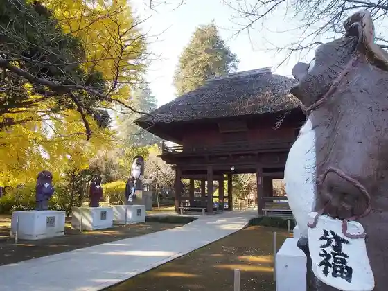

Tsutsujiga Oka Park
Tatebayashi, Gunma · 0276-74-5233 · Official / source link
Morin Tera
Tatebayashi, Gunma · 0276-72-1514 · Official / source link

Toa Yakuhin Kogyo (Kabu) Tatebayashi Kojo
Tatebayashi, Gunma · 0276-72-4941 · Official / source link
Hanayama Udon
Tatebayashi, Gunma · 0276-74-7766 · Official / source link
Tatebayashi Udon
Tatebayashi, Gunma · 0120-57-3741 · Official / source link
Shun Topiipuru
Tatebayashi, Gunma · 0276-72-1236 · Official / source link
Heiya Ya Soba Mise
Tatebayashi, Gunma · 0276-72-0076 · Official / source link
Maruki Ya
Tatebayashi, Gunma · 0276-72-0957 · Official / source link
Mori Jin
Tatebayashi, Gunma · 0276-75-0490 · Official / source link
Kurita Shokuhin (Kabu)
Tatebayashi, Gunma · 0276-72-2702 · Official / source link
Tenka
Tatebayashi, Gunma · 0276-75-3362 · Official / source link
Kusunoki Iori
Tatebayashi, Gunma · 0276-75-2000 · Official / source link
Tatebayashi Hanashobu Sono (Tsutsujiga Oka Daini Park)
Tatebayashi, Gunma · 0276-74-5233 · Official / source link
Shiro Numa
Tatebayashi, Gunma · 0276-74-5233 · Official / source link
Prefectural Tatebayashi Art Museum
Tatebayashi, Gunma · 0276-72-8188 · Official / source link
Seifun Museum
Tatebayashi, Gunma · 0276-71-2000 · Official / source link
Mukai Senshu Kinen Kodomo Science Museum
Tatebayashi, Gunma · 0276-75-1515 · Official / source link